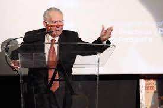
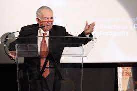

El restaurador y director de fotografía Juan Mariné, Goya de Honor 2024
El cineasta, de 102 años, empezó a trabajar en el cine de niño, rodó el entierro del líder anarquista Durruti,
fotografió la primera película española en Technicolor (y otras 140 más) y ha resucitado diversos clásicos El director de fotografía
y restaurador fílmico Juan Mariné será el Goya de Honor 2024, según ha anunciado hoy la Academia de cine,
aprovechando la conmemoración del Día del Cine Español.
Mariné, de 102 años, ha vivido todas las épocas del cine, ya que empezó a trabajar en un laboratorio fílmico con 13 años,
rodó cámara en mano el entierro del líder anarquista Buenaventura Durruti en noviembre de 1936, fue el director de
fotografía de la primera película española en Technicolor (La gata),
además de otras 140 más, y ha inventado numerosas máquinas y procedimientos para la restauración de película física.
Como apunta la Junta Directiva de la Academia para justificar el galardón:
“[se le concede] Por su entera dedicación al cine durante más de ochenta años de trayectoria que transitan por la
historia del cine español, sus esfuerzos en el trabajo de la conservación y
la restauración y por representar vivamente, a través de su oficio, la importancia de la luz en la historia de nuestro cine”.
Mariné continuó trabajando en su laboratorio (tres salas encadenadas repletas de máquinas y material fílmico)
en los sótanos de la Escuela de Cine de la Comunidad de Madrid hasta el confinamiento obligado por la covid.
“Mi padre fue un buen jugador de fútbol, del Foot-Ball Espanya.
Mi madre también jugó: fue portera del Infantil Sociedad Española de Foot-Ball”, contaba a este diario en diciembre de 2019,
cuando iba a empezar un año de homenajes a su labor por parte de la Filmoteca Española que se postergó —y solo se desarrolló en parte―
por culpa de la covid. Aprendió a leer con cuatro años para entender los carteles insertados en las películas mudas.
Un día de noviembre de 1934 su tío le encargó llevar una cámara cinematográfica para rodar cine sonoro al estudio Orphea.
Por eso, le pidieron que se quedara al lado de la cámara, y siguió el consejo de Adrien Porchet, el director de fotografía:
“Si quieres prosperar en esto, estate a tu hora y jamás te sientes”.
Como era miembro del sindicato CNT, asistió al entierro de líder de las tropas anarquistas,
Buenaventura Durruti, que murió en noviembre de 1936. “Había tanta gente, y filmamos tanto, que agotamos las baterías, y
yo era el único que sabía rodar a mano arrastrando la película con la manivela”. Mariné participó en Aurora de esperanza (1937),
drama anarquista precursor del neorrealismo, y en otras películas —como Paquete, el fotógrafo público número uno (1938),
donde se hizo amigo de un actor que empezaba, Paco Martínez Soria—, antes de incorporarse a filas.
Tras ser diezmada su compañía en mayo de 1938 en la batalla de río Segre, Mariné acabó como fotógrafo de otro mito de la contienda,
el teniente coronel Enrique Lister, hasta que ese invierno cruzó la frontera con Francia.
Del campo de prisioneros de la Rinconada (Sevilla) lo sacó su padre con contactos, y Mariné acabó la guerra en el bando franquista,
como fotógrafo del Estado Mayor de Cataluña.
Y por eso, volvió a su pasión: “Tras sobrevivir a la Guerra Civil juré que mi vida la dedicaría al cine”.
En 1947 se muda a Madrid y al año siguiente debuta como director de fotografía en la primera de las 140 películas en las que realizó esta labor hasta 1990,
que se retiró con un rodaje bajo el agua: La grieta, de Juan Piquer Simón.
Entre esos trabajos, la primera rodada en España en Technicolor, La gata (1956), con Jorge Mistral
(compañero suyo de partidos infantiles de fútbol en su barrio de Barcelona) y Aurora Bautista.
 Juan Mariné 
Juan Mariné 
GREGORIO BELINCHÓN-Madrid - 06 OCT 2023 - 15:24 CEST
Volver al inicio Volver a Cultura